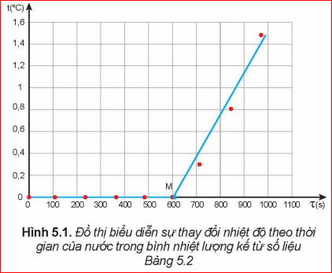

I KHÁI NIỆM NHIỆT NÓNG CHẢY RIÊNG
1 Hệ thức tính nhiệt lượng trong quá trình truyền nhiệt để làm vật nóng chảy hoàn toàn
Nhiệt lượng cần truyền cho vật khi vật bắt đầu nóng chảy tới khi vật nóng chảy hoàn toàn phụ thuộc vào khối lượng của vật và tính chất của chất làm vật.
Thí nghiệm cho thấy nhiệt lượng này tỉ lệ thuận với khối lượng của vật:
Trong đó: \(Q\) là nhiệt lượng cần truyền cho vật (J); \(m\) là khối lượng của vật (kg).
Với mỗi chất, hằng số trong hệ thức (5.1) có độ lớn riêng. Hằng số này được gọi là nhiệt nóng chảy riêng của chất làm vật, kí hiệu là \(\lambda\), có giá trị là:
Do đó, hệ thức tính nhiệt lượng trong quá trình truyền nhiệt để làm vật nóng chảy hoàn toàn là:
Bảng 5.1. Giá trị gần đúng của nhiệt nóng chảy riêng ở nhiệt độ nóng chảy dưới áp suất tiêu chuẩn của một số chất
| Chất | Nhiệt độ nóng chảy (\(^\circ\text{C}\)) | Nhiệt nóng chảy riêng (\(\text{J/kg}\)) |
|---|---|---|
| Nước đá | 0 | \(3,34 \cdot 10^5\) |
| Sắt | 1535 | \(2,77 \cdot 10^5\) |
| Đồng | 1084 | \(1,80 \cdot 10^5\) |
| Chì | 327 | \(0,25 \cdot 10^5\) |
2 Định nghĩa nhiệt nóng chảy riêng
Nhiệt nóng chảy riêng của một chất là nhiệt lượng cần để làm cho một kilôgam chất đó nóng chảy hoàn toàn ở nhiệt độ nóng chảy.
Nhiệt nóng chảy riêng và nhiệt độ nóng chảy là những thông tin giúp xác định được năng lượng cần cung cấp cho lò nung, thời gian nung, thời điểm đổ kim loại nóng chảy vào khuôn, thời điểm lấy sản phẩm ra khỏi khuôn. Các đại lượng này cũng cần cho việc lựa chọn vật liệu chế tạo hợp kim phù hợp với từng yêu cầu sử dụng khác nhau, tách các kim loại nguyên chất ra khỏi quặng hỗn hợp,...
1. Tại sao khi chế tạo các vật bằng chì, đồng, thường hay dùng phương pháp đúc?
2. Tính thời gian cần thiết để làm nóng chảy hoàn toàn 2 kg đồng có nhiệt độ ban đầu \(30^\circ\text{C}\), trong một lò nung điện có công suất 20 000 W. Biết chỉ có 50% năng lượng tiêu thụ của lò được dùng vào việc làm đồng nóng lên và nóng chảy hoàn toàn ở nhiệt độ không đổi.
Lời giải:
Tra Bảng 4.1 và Bảng 5.1 đối với Đồng:
- Nhiệt dung riêng \(c = 380\,\text{J/kg.K}\)
- Nhiệt độ nóng chảy \(t_{\text{nc}} = 1084^\circ\text{C}\)
- Nhiệt nóng chảy riêng \(\lambda = 1,80 \cdot 10^5\,\text{J/kg}\)
Bước 1: Nhiệt lượng cần thiết để tăng nhiệt độ đồng từ \(30^\circ\text{C}\) lên \(1084^\circ\text{C}\):
\[ Q_1 = m \cdot c \cdot (t_{\text{nc}} - t_0) = 2 \cdot 380 \cdot (1084 - 30) = 801.040\,\text{J} \]
Bước 2: Nhiệt lượng cần để làm nóng chảy hoàn toàn 2 kg đồng ở \(1084^\circ\text{C}\):
\[ Q_2 = \lambda \cdot m = 1,80 \cdot 10^5 \cdot 2 = 360.000\,\text{J} \]
Bước 3: Tổng nhiệt lượng có ích cần cung cấp:
\[ Q_{\text{ích}} = Q_1 + Q_2 = 801.040 + 360.000 = 1.161.040\,\text{J} \]
Bước 4: Năng lượng điện toàn phần lò nung tiêu thụ (\(H = 50\% = 0,5\)):
\[ A = \frac{Q_{\text{ích}}}{H} = \frac{1.161.040}{0,5} = 2.322.080\,\text{J} \]
Thời gian nung cần thiết với công suất \(P = 20.000\,\text{W}\):
\[ t = \frac{A}{P} = \frac{2.322.080}{20.000} = 116,104\,\text{giây} \approx 1,935\,\text{phút} \]
II THỰC HÀNH ĐO NHIỆT NÓNG CHẢY RIÊNG CỦA NƯỚC ĐÁ
1 Mục đích thí nghiệm
Xác định nhiệt nóng chảy riêng của nước đá.
2 Dụng cụ thí nghiệm
- Bộ dụng cụ thí nghiệm như bài đo nhiệt dung riêng (Biến thế nguồn, oát kế, nhiệt kế điện tử, nhiệt lượng kế,...).
- Các viên nước đá nhỏ và nước lạnh.
 Hình 5.1. Bộ thí nghiệm đo nhiệt nóng chảy riêng của nước đá
Hình 5.1. Bộ thí nghiệm đo nhiệt nóng chảy riêng của nước đá
3 Thiết kế phương án thí nghiệm
Thảo luận trả lời các câu hỏi thiết kế phương án:
- Từ công thức (5.3), hãy cho biết cần đo đại lượng nào để xác định nhiệt nóng chảy riêng của nước đá?
- Nhiệt lượng làm các viên nước đá trong nhiệt lượng kế nóng chảy được lấy từ đâu?
- Nhiệt lượng nước đá thu được trong bình nhiệt lượng kế được xác định bằng cách nào?
- Mô tả các bước tiến hành thí nghiệm.
Hướng giải quyết:
1. Cần đo: Khối lượng nước đá \(m\) và nhiệt lượng \(Q\) cung cấp để nước đá nóng chảy hoàn toàn ở \(0^\circ\text{C}\).
2. Nhiệt lượng tỏa ra chủ yếu từ dây điện trở của nhiệt lượng kế khi có dòng điện chạy qua.
3. Nhiệt lượng được xác định qua công suất dòng điện và thời gian nóng chảy: \(Q = \overline{P} \cdot \tau_M\).
4. Các bước: Cho nước đá và nước lạnh vào bình \(\rightarrow\) Bật nguồn điện \(\rightarrow\) Đọc thời gian, nhiệt độ và công suất theo chu kỳ \(\rightarrow\) Vẽ đồ thị để xác định thời điểm \(\tau_M\) nước đá tan hết \(\rightarrow\) Tính \(\lambda\).
4 Tiến hành thí nghiệm
- Cho viên nước đá (khối lượng \(m = 0,25\,\text{kg}\)) và một ít nước lạnh vào bình nhiệt lượng kế, sao cho toàn bộ điện trở chìm trong hỗn hợp nước và nước đá.
- Cắm đầu đo của nhiệt kế vào bình nhiệt lượng kế.
- Nối oát kế với nhiệt lượng kế và nguồn điện.
- Bật nguồn điện. Khuấy liên tục nước đá, cứ sau mỗi khoảng thời gian 2 phút lại đọc số đo thời gian trên oát kế và nhiệt độ trên nhiệt kế rồi ghi kết quả vào bảng.
- Tắt nguồn điện.
Bảng 5.2. Ví dụ về kết quả thí nghiệm đo nhiệt nóng chảy riêng của nước đá (\(m = 0,25\,\text{kg}\))
| Thời gian \(\tau\) (s) | 0 | 120 | 240 | 360 | 480 | 600 | 720 | 840 | 960 |
|---|---|---|---|---|---|---|---|---|---|
| Nhiệt độ \(t\) (\(^\circ\text{C}\)) | 0 | 0 | 0 | 0 | 0 | 0 | 0,3 | 0,8 | 1,5 |
| Công suất (W) | 14,25 | 14,23 | 14,19 | 14,25 | 14,23 | 14,24 | 14,22 | 14,32 | 14,26 |
5 Kết quả thí nghiệm
Vẽ đồ thị sự phụ thuộc nhiệt độ \(t\) theo thời gian \(\tau\). Vẽ hai đường thẳng đi gần nhất các điểm trên đồ thị (Hình 5.1).
Chọn điểm \(M\) là giao điểm của hai đường thẳng, đọc giá trị \(\tau_M\) (tương ứng điểm bắt đầu tăng nhiệt độ sau khi tan hết).
Công thức tính nhiệt nóng chảy riêng:
\[ \lambda_{\text{H}_2\text{O}} = \frac{\overline{P}\tau_M}{m} \]Trong đó \(\overline{P}\tau_M\) là nhiệt lượng do dòng điện qua điện trở tỏa ra trong thời gian \(\tau_M\) và \(m\) là khối lượng nước đá.

Hình 5.1. Đồ thị biểu diễn sự thay đổi nhiệt độ theo thời gianEM ĐÃ HỌC
- Nhiệt nóng chảy riêng của một chất là nhiệt lượng cần để làm cho một kilôgam chất đó nóng chảy hoàn toàn ở nhiệt độ nóng chảy.
- Đơn vị của nhiệt nóng chảy riêng là: \(\text{J/kg}\).
- Hệ thức tính nhiệt lượng trong quá trình truyền nhiệt để làm vật nóng chảy hoàn toàn ở nhiệt độ nóng chảy: \(Q = \lambda m\).
- Cách xác định nhiệt nóng chảy riêng của nước đá bằng thực hành thí nghiệm.
EM CÓ THỂ
- Xác định được nhiệt nóng chảy riêng của một chất.
- Dùng khái niệm nhiệt nóng chảy riêng để giải thích các hiện tượng thực tế có liên quan. Ví dụ: công nghệ phân kim (tách kim loại) bằng nóng chảy, dùng thiếc để hàn,...
CỦNG CỐ LÝ THUYẾT & BÀI TẬP
AI LÀ TRIỆU PHÚ VẬT LÝ
Trả lời 10 câu hỏi để chinh phục đỉnh cao tri thức Bài 5!
Bài tập tự luận tính toán
Bài 1: Tính nhiệt lượng cần cung cấp để làm nóng chảy hoàn toàn 3 kg nước đá ở nhiệt độ \(0^\circ\text{C}\). Cho biết nhiệt nóng chảy riêng của nước đá là \(\lambda = 3,34 \cdot 10^5\,\text{J/kg}\).
Lời giải:
Nhiệt lượng cần thiết để làm nóng chảy hoàn toàn 3 kg nước đá ở \(0^\circ\text{C}\) là:
\[ Q = \lambda \cdot m = (3,34 \cdot 10^5) \cdot 3 = 1.002.000\,\text{J} = 1,002\,\text{MJ} \]
Bài 2: Cho 1,5 kg chì ở nhiệt độ ban đầu \(27^\circ\text{C}\). Biết chì có nhiệt độ nóng chảy là \(327^\circ\text{C}\), nhiệt dung riêng \(c = 130\,\text{J/kg.K}\) và nhiệt nóng chảy riêng \(\lambda = 0,25 \cdot 10^5\,\text{J/kg}\). Tính tổng nhiệt lượng cần cung cấp để đưa chì lên nhiệt độ nóng chảy và làm nóng chảy hoàn toàn lượng chì đó.
Lời giải:
1. Nhiệt lượng làm chì tăng nhiệt độ từ \(27^\circ\text{C}\) lên \(327^\circ\text{C}\):
\[ Q_1 = m \cdot c \cdot \Delta t = 1,5 \cdot 130 \cdot (327 - 27) = 1,5 \cdot 130 \cdot 300 = 58.500\,\text{J} \]
2. Nhiệt lượng làm nóng chảy hoàn toàn chì ở \(327^\circ\text{C}\):
\[ Q_2 = \lambda \cdot m = 0,25 \cdot 10^5 \cdot 1,5 = 37.500\,\text{J} \]
3. Tổng nhiệt lượng cần thiết:
\[ Q = Q_1 + Q_2 = 58.500 + 37.500 = 96.000\,\text{J} = 96\,\text{kJ} \]
Bài 3: Thả 500 g nước đá ở \(0^\circ\text{C}\) vào một bình chứa 2 kg nước ở \(30^\circ\text{C}\). Bỏ qua nhiệt dung của bình và sự trao đổi nhiệt với môi trường. Hỏi nước đá có tan hết không? Nếu tan hết, nhiệt độ cuối cùng của hệ là bao nhiêu? (Cho \(c_{\text{nước}} = 4200\,\text{J/kg.K}\), \(\lambda_{\text{đá}} = 3,34 \cdot 10^5\,\text{J/kg}\)).
Lời giải:
1. Nhiệt lượng tối đa mà 2 kg nước tỏa ra khi hạ từ \(30^\circ\text{C}\) xuống \(0^\circ\text{C}\):
\[ Q_{\text{tỏa max}} = m_2 \cdot c \cdot (30 - 0) = 2 \cdot 4200 \cdot 30 = 252.000\,\text{J} \]
2. Nhiệt lượng cần thiết để làm nóng chảy hoàn toàn 0,5 kg nước đá ở \(0^\circ\text{C}\):
\[ Q_{\text{nc}} = \lambda \cdot m_1 = (3,34 \cdot 10^5) \cdot 0,5 = 167.000\,\text{J} \]
Vì \(Q_{\text{tỏa max}} (252.000\,\text{J}) > Q_{\text{nc}} (167.000\,\text{J})\) nên nước đá tan hết hoàn toàn.
3. Gọi \(t\) là nhiệt độ chung cuối cùng của hệ (\(t > 0^\circ\text{C}\)):
Phương trình cân bằng nhiệt:
\[ Q_{\text{nc}} + m_1 \cdot c \cdot (t - 0) = m_2 \cdot c \cdot (30 - t) \]
\[ 167.000 + 0,5 \cdot 4200 \cdot t = 2 \cdot 4200 \cdot (30 - t) \]
\[ 167.000 + 2100t = 252.000 - 8400t \implies 10500t = 85.000 \implies t \approx 8,1^\circ\text{C} \]